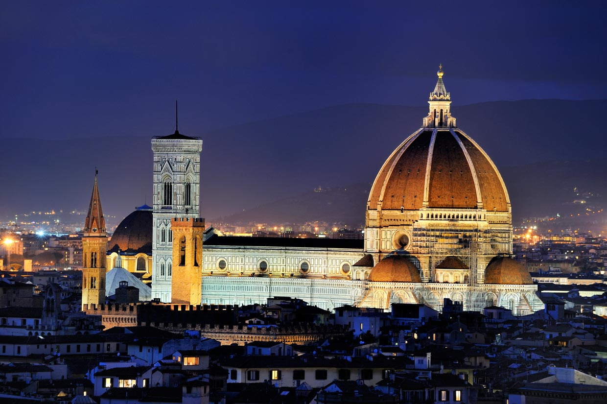

Italia alberga algunas de las ciudades mas iconicas y hermosas del mundo. Roma, la capital, es famosa por sus antiguas ruinas romanas, como el Coliseo y el Foro Romano, asi como por la Ciudad del Vaticano, sede de la Iglesia Catolica. Roma es una ciudad donde la historia antigua y la vida moderna se entrelazan, creando una atmosfera unica para sus visitantes.
Venecia, por otro lado, es conocida por sus canales y su romantica atmosfera. Construida sobre una serie de islas en una laguna, la ciudad ha fascinado a viajeros durante siglos con su arquitectura gotica, sus gondolas y sus puentes. Entre sus principales atracciones se encuentran la Plaza de San Marcos, el Puente de Rialto y el Gran Canal.
Florencia es el corazon del Renacimiento italiano y un tesoro para los amantes del arte y la arquitectura. La Catedral de Florencia, con su famosa cupula diseñada por Brunelleschi, es una maravilla arquitectonica, al igual que la Galeria de los Uffizi, que alberga obras maestras de artistas como Botticelli, Leonardo da Vinci y Miguel Angel. Florencia es una ciudad que combina la belleza artistica con la hospitalidad toscana.
Milan, por su parte, es el centro de la moda y el diseño en Italia. Ademas de ser una ciudad moderna y dinamica, Milan tiene una rica historia que se refleja en su impresionante Catedral gotica y en el convento de Santa Maria delle Grazie, donde se encuentra la famosa pintura de Leonardo da Vinci, "La ultima cena". Cada ciudad italiana ofrece una experiencia unica, con su propia historia, cultura y belleza que descubrir.